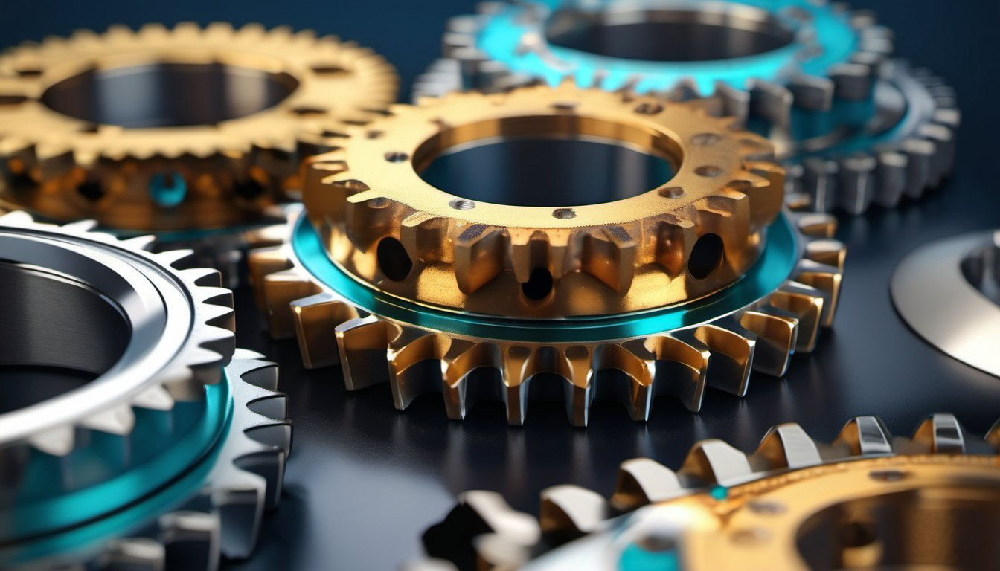
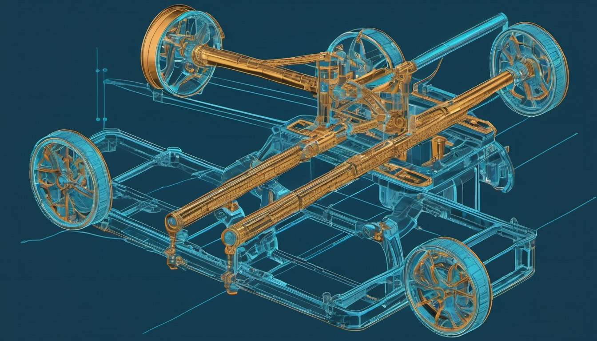

Структура и синтез на механизми
Проектиране на лостови, гърбични и зъбни механизми с желани кинематични и динамични свойства.

Факултет по индустриални технологии · Технически университет – София
Наука за движението, която стои зад всяка машина. От 1945 г. подготвяме инженерите, които проектират механизмите на утрешния ден.
01 — Катедрата
Катедра „Теория на механизмите и машините“ (ТММ) дава на студентите фундаменталните знания за механичната същност на машините и развива тяхната инженерно-техническа култура и изобретателско мислене.
Нашите преподаватели публикуват у нас и в чужбина, участват в международни проекти, работят по договори с фирми, създават патенти и изобретения, а много от разработките са внедрени в промишлеността с реален икономически и социален ефект.
02 — Научноизследователска дейност
Проектиране на лостови, гърбични и зъбни механизми с желани кинематични и динамични свойства.
Манипулатори, паралелни структури и интелигентни задвижвания за съвременната автоматизация.
Уравновесяване, вибрации и преходни режими — за по-тихи, по-леки и по-надеждни машини.
Геометрия, якост и ефективност на зъбни, планетни и циклоидни предавки.
03 — Виртуална лаборатория
Четиризвенният шарнирен механизъм е „азбуката“ на ТММ. Променете дължините на звената и наблюдавайте как се променя траекторията на точка от свързващия лост.
04 — Обучение
Катедрата води 10 задължителни дисциплини, две от които са в магистърски програми, и предлага две избираеми. Студентите развиват инженерно мислене чрез анализ, моделиране и проектиране.

Структура и кинематика на механизмите — как се описва и измерва движението.
Скорости, ускорения и сили — динамика на машини и механични системи.
Проектиране на механизми по зададени траектории и закони на движение.
Роботика, автоматизация и машиностроене — от моделирането до практиката.
Две дисциплини в магистърски програми за задълбочена специализация.
05 — История
Поставени са корените на дисциплината в техническото образование на България.
През юни катедрата се обособява като самостоятелно звено.
Първият преподавател по дисциплината, първи ръководител на катедрата и признат неин основател.
Съвременни изчислителни методи, роботика и мехатроника в основата на обучението и науката.
06 — Ръководство
Ръководител на катедрата
Заместник-ръководител
Катедрата наброява 15 преподаватели. Пълният състав е на официалната страница на ТУ–София.
07 — Контакти
Технически университет – София
Факултет по индустриални технологии
бул. „Климент Охридски“ 8, 1000 София
Блок 4